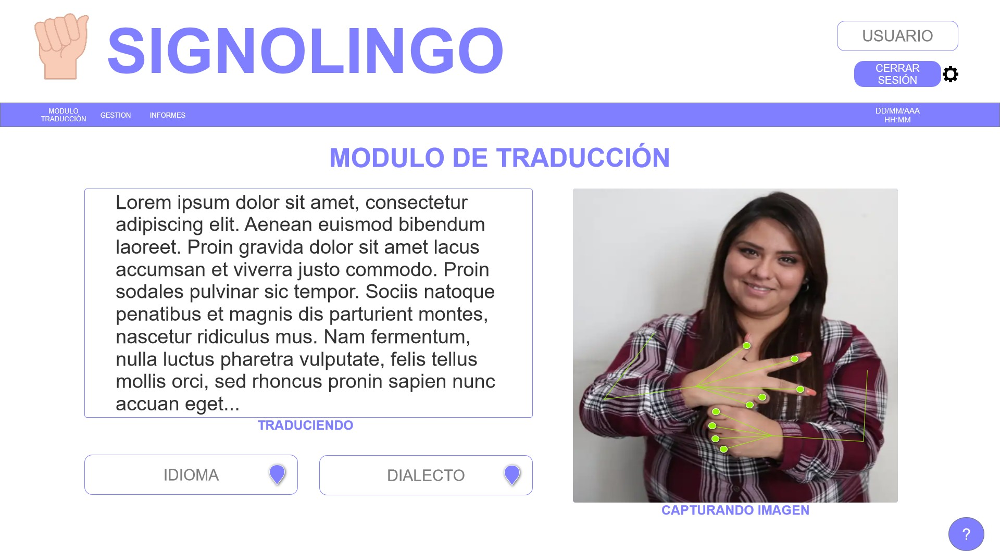
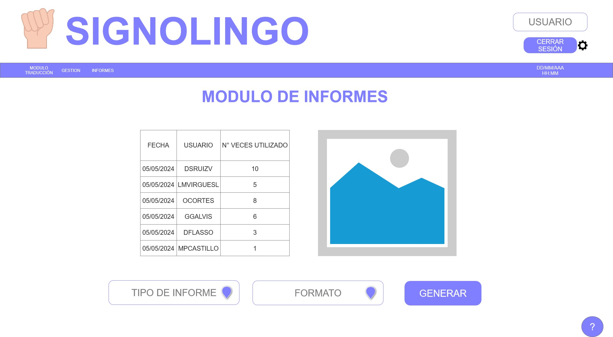

En Signolingo, estamos emocionados de presentar nuestros servicios diseñados para transformar la forma en
que las personas sordomudas se comunican con el mundo que las rodea. Nuestra aplicación de traducción de
lenguaje de señas a texto en tiempo real ofrece una gama de servicios innovadores y accesibles que
facilitan la comunicación efectiva y la inclusión social. ¿Estás listo para descubrir cómo podemos
ayudarte a romper las barreras de comunicación? ¡Aquí tienes una vista detallada de nuestros servicios!
Traducción en Tiempo Real
Nuestra aplicación utiliza tecnología avanzada de reconocimiento de gestos para traducir el lenguaje de
señas a texto plano en tiempo real. Ya no hay demoras ni malentendidos: cada gesto se interpreta al
instante y se muestra como texto legible en tu dispositivo.
Personalización y Adaptabilidad
Entendemos que cada usuario tiene sus propias necesidades y preferencias. Es por eso que ofrecemos
opciones de personalización para adaptar la aplicación a tus requerimientos específicos. Desde la
configuración de gestos hasta la elección del idioma objetivo, ponemos el control en tus manos para que
puedas comunicarte de la manera que te resulte más cómoda.
Interfaz Intuitiva y Fácil de Usar
Nos enorgullece ofrecer una interfaz de usuario intuitiva y fácil de usar, diseñada pensando en la
accesibilidad. Con solo unos pocos clics, podrás acceder a todas las funciones de la aplicación y
empezar a comunicarte de manera eficaz y sin complicaciones.
Soporte Técnico y Actualizaciones Continuas
En Signolingo, nos comprometemos a brindarte el mejor servicio posible. Por eso, ofrecemos soporte
técnico dedicado para resolver cualquier problema que puedas encontrar. Además, estamos constantemente
mejorando y actualizando nuestra aplicación para ofrecerte nuevas funciones y mejoras de rendimiento.
Integración con Plataformas y Dispositivos
Nuestra aplicación es compatible con una variedad de plataformas y dispositivos, lo que te permite
acceder a ella desde cualquier lugar y en cualquier momento. Ya sea en tu PC, tableta o teléfono
inteligente, puedes disfrutar de la comodidad de la traducción instantánea del lenguaje de señas a texto
en tiempo real.
Capacitación y Recursos Educativos
Además de nuestra aplicación principal, ofrecemos capacitación y recursos educativos para ayudarte a
familiarizarte con el lenguaje de señas y maximizar el uso de nuestra aplicación. Desde tutoriales en
línea hasta sesiones de capacitación personalizadas, estamos aquí para apoyarte en cada paso del camino.
Con nuestros servicios de traducción de lenguaje de señas a texto en tiempo real, estamos comprometidos
a hacer del mundo un lugar más inclusivo y accesible para todos. ¡Únete a nosotros en nuestro viaje
hacia una comunicación sin barreras!
|  |  |
6016331920
+57 3002431940
www.signolingo.com.co
KR 7 #24 - 89 Piso 40 - Bogotá D.C / Colombia